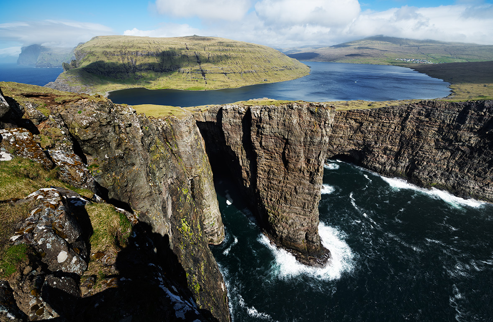
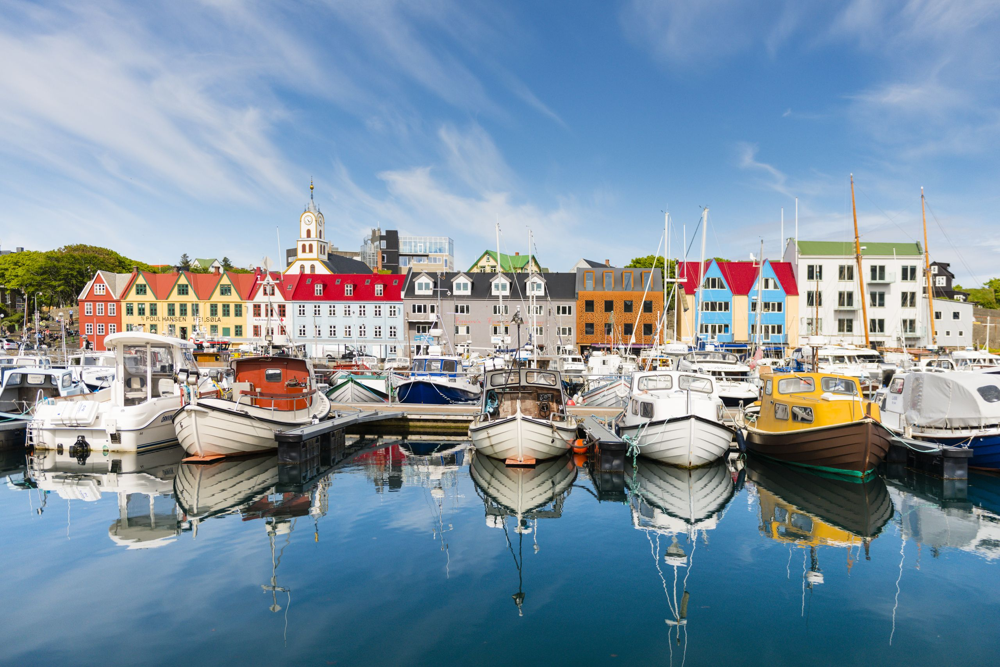

1. Gásadalur & Múlafossur
Gásadalur is a magical place and a must-see in Faroe Islands. You
simply cannot leave without having seen this remote and unspoiled spot
of land. Besides the tiny village that seems to be from a distant
past, the actual highlight is Múlafossur, the waterfall that falls off
the cliff into the ocean. Simply spectacular! Gásadalur is surrounded
by some of the highest mountains on Vágar and you have a pretty good
view of the island Mykines. Until quite recently, Gásadalur was only
accessible via a path over the mountain, which the poor postman had to
walk three times a week - this person must have been in great shape!
The tunnel connecting the village with the rest of the island was only
build in 2004, ending Gásadalur's long islation. The old post route is
still a pretty nice hike. Now, Gásadalur even has a café, called
Gásadalsgarður, which serves authenic local food and baverages as well
as a smal guesthouse with four rooms.
2. Saksun
Only about a dozen people live in Saksun, a picturesque and remote
village set in a natural ciruclar Amphitheatre above a tidal lagoon.
The highlight of the village is the church, built in 1858. Amazing
photo spot! At low tide, it is possible to walk along the sandy shore
of the lagoon.The village also includes an active sheep farm, which is
also a museum. During the summer months, make sure to visit either
early in the morning or towards the evening to avoid the crowds.
3. Sørvágsvatn

It is also called "The Lake over the Ocean" and sits only about 30m
above the ocean. It's an easy hike of about 1 hour to get there from
the village of Sandavágur, with many sheeps keeping you company along
the way. Make sure to bring some water, wear layers and waterproof
walking or hiking boots. When approaching the lake from the other
side, you can actually get a much better view, we didn't know when we
first went there. Lesson learned, we will add more spectaular pictures
after our next trip.
4. Risin & Kellingin (Giant & Witch)
You will have the best view of the witch and the giant rock formations
from Tjørnuvík and Eiði. The myth behind it is quite special: an
icelandic giant and his wife, who was a witch, were sent to steal the
Faroe Islands and to bring them all the way to Iceland. When they
arrived at the most north-western part of the Faroe Islands, they
worked hard to attach a rope in order to be able to pull the islands
but that turned out to be quite difficult. They were so engulfed in
their work, that they didn't notice the sun rising. The first sunbeams
turned them into stone and this is where they stand until today.
5. Kirkjubøur
Kirkjubøur is a historic site and one of the oldest villages in Faroe
Islands. It used to be the center of all religious as well as cultural
activies, also because if it's central location as well as fertile
soil.
6. Gjógv
Gjógv is a charming little village located on the northeast tip of the
island of Eysturoy. The village was named after a 200-metre long
sea-filled gorge. There are some easy walking trails with great views
along the way and great views of the neighboring islands.
7. Tórshavn & Surroundings

Higlights in Tórshavn include: the old town, which is around Reyn and
Undir Ryggi. Here you will find a number black-tarred wooden houses
with grass roofs. Tinganes, the historical part of the city by the
harbour and one of the oldest Parliament meeting places in the world.
The Viking parliamant began meeting here more than 1200 years ago to
discuss matters of national importance. The parliament complex
consists of a number of bright red wooden houses, some of them with
grass roofs. There are no guards or security controls, you can walk
around this area as you please. Skansin, the remains of the fort built
by the Faroese adventurer Magnus Heinason in 1580. The fort was
destroyed by French pirates in 1677 after their rather outrages
demands were not fulfilled. According to the offical Faroe Islands
Tourism Website, they asked for 100 oxen, 200 sheep, 500 pairs of
gloves, 1,200 pairs of stockings and 60 nightshirts. The fort was
rebuilt and expanded a few times and used as a mility base by the
British Royal Navy during Wold War II. Today, not much remains but
there are still a few brass cannons and the Skansin Lighthouse. Also,
when you walk up the hill, you will have a good view of the Torshavn
port as well as the surrounding islands.
8. Island of Mykines
Mykines is the most western island of the Faroe Islands. It offers
great views all around as well as great hiking and bird-watching
opportunities. In fact, Mykines is know as "bird paradise". During the
summer months, hundreds of puffins build their nests in burrows in the
clifftops. Also, there is a popular hiking path from the old Mykines
village to the lighthouse on the other end of the island
9. Island of Kalsoy: Mikladalur & Kallur Lighthouse
Kalsoy can be reached via ferry from Klaksvík. Is is also known as
"the flute" because of it's thin shape and many tunnels that connect
the 4 villages on the island. Less than 150 people live on Kalsoy.
Highlights include: besides some great trails and views as well as
ample bird-watching opportunties, including the famous puffins, storm
petrel and black guillemots, there is the village of Miklaralur with
the Kópakonan statue - the seal woman - and Kallur lighthouse, which
is located on the norther tip of Kalsoy.
10. Vestmannabjørgini - Vestamanna Sea Cliffs
Vestamanna is famous for it's towering, up to 700m high cliffs.
Because the cliffs and caves provide safe nesting places during the
summer months, it is quite a popular spot for puffins, razorbills,
guillemots and fulmar. You can visit the Vestamanna bird cliffs via
boat, there are a number of tours on a daily basis from May -
September.